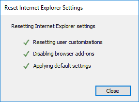
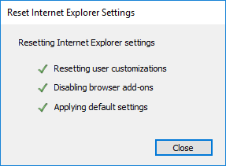
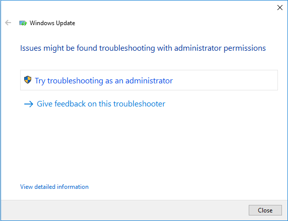
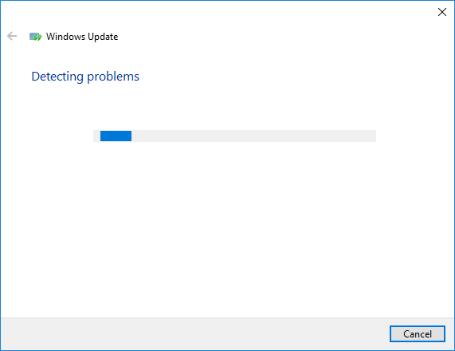
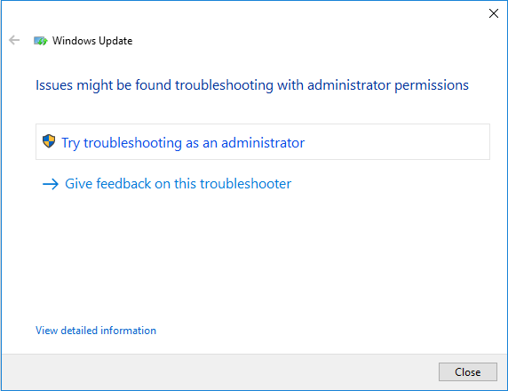
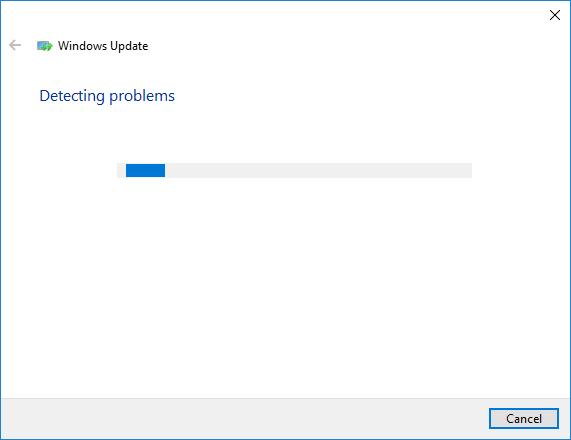

Se recomienda realizar algunas pruebas para simplificar el incidente y encontrar la mejor solución.
Punto de restauración:
En caso que algo falle, puede restaurar su PC a el último punto de restauración.
Para crear un punto de restauración, en el menú principal seleccione la primera opción. Está opción abre una ventana con las propiedades del sistema. p. ej.
En este lugar, puede crear un punto de restauración. Solamente presione el botón "Crear". p. ej.


Si esta opción está desactivada, pulse el botón "Configurar" y seleccione "Activar protección del sistema". p. ej.

Remover archivos temporales:
Para eliminar los archivos temporales, Seleccione la opción "Eliminar archivos temporales del sistema". Esta opción elimina automáticamente los archivos temporales. p. ej.
Restablecer Internet Explorer:
Para restablecer Internet Explorer, seleccione la opción "Abrir las opciones de Internet Explorer". Esto abre las opciones de Internet. p. ej.
En esta ventana seleccione la pestaña "Opciones avanzadas" y presione el botón "Restablecer". p. ej.
 

Solucionar problemas automáticamente:
Se recomienda ejecutar el Fix-It para Windows Update, seleccione la opción "Explorar otras soluciones locales". p. ej.
 



La "Solucion de problemas de Windows Update" muestra un código de error que nos ayuda a encontrar la solución a nuestro incidente. Si esta opción no muentra un código de error, puede descargar una herramienta "fix-it" para encontrar el código de error.
Windows 7, Windows 8, Windows 8.1: http://go.microsoft.com/?linkid=9830262
Windows 10: http://aka.ms/diag_wu